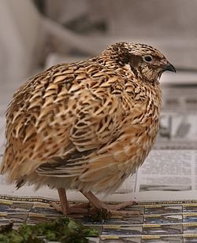
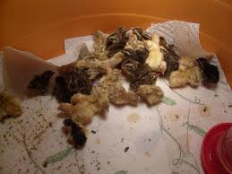

Introduction
Names and Varieties
The Japanese quail, also known as Coturnix quail (Coturnix japonica) is a species of Old World quail found in East Asia. First considered a subspecies of the Common quail, it was distinguished as its own species in 1983.[2] The Japanese quail has played an active role in the lives of humanity since the 12th century, and continues to play major roles in industry and scientific research. Where it is found, the species is abundant across most of its range. Currently there are a few true breeding mutations of the Japanese quail, the breeds from the United States are: Texas A&M, English White, Golden Range, Red Range, Italian, Manchurian, Tibetan, Rosetta, Scarlett, Roux Dilute and Golden Tuxedo.
Morphology (Changes in appearance)
The morphology of the Japanese quail differs depending on its stage in life. When chicks, both male and female individuals exhibit the same kind of plumage and coloring.[2] Their heads aretawny in color, with small black patches littering the area above the beak.[2] The wings and the back of the chick are a pale brown, the back also having four brown stripes running along its length. A pale yellow-brown stripe surrounded by smaller black stripes runs down the top of the head.
The plumage of the Japanese quail is sexually dimorphic, allowing for differing sexes to be distinguished from one another.[2][9] Both male and female adults exhibit predominantly brown plumage. However, markings on the throat and breast, as well as the particular shade of brown of the plumage, can vary quite a bit.[2][9] The breast feathers of females are littered with dark spots among generally pale feathers. Contrastingly, male breast feathers show off a uniform dark reddish-brown color that is devoid of any dark spots.[2] This reddish brown coloration also appears in the male cheek, while female cheek feathers are more cream colored. Some males also exhibit the formation of a white collar, whereas this does not occur in any female members of the species. It is important to note that while this coloration is very typical of wild populations of Coturnix japonica, domestication and selective breeding of this species has resulted in numerous different strains exhibiting a variety of plumage colors and patterns.[2]
Males tend to be smaller than females.[9] Wild adults weigh between 90 and 100 grams while their domesticated counterparts typically weigh between 100 and 120 grams.[2] However, weight among domesticated lines varies considerably, as commercial strains bred for meat production can weigh up to 300 grams.[2]